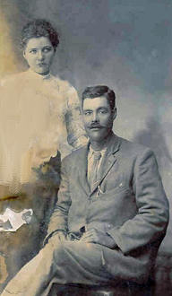
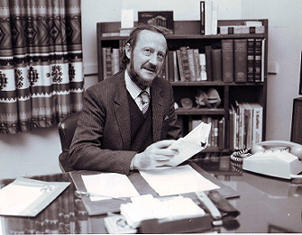
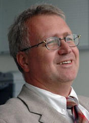
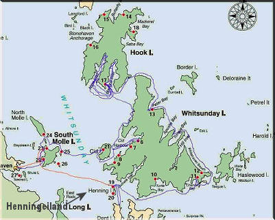
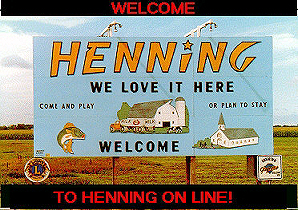
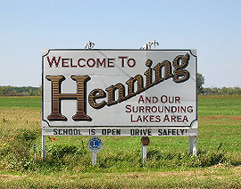

|
Indeks: |

In alle geslagsregisters is daar maar altyd ontbrekende gegewens - veral by vroulike lede van vroeëre geslagte. Dit verg dikwels jare se navorsing om hierdie gapinkies te vul. Soms kry mens dit nooit reg nie. In ander gevalle loop mens heel toevallig die ontbrekende gegewens raak. Die volgende brief van Dederick Jankowitz is 'n goeie voorbeeld van hoe ons soms daardie klein gapinkies in ons Henning geslagsregister vul. Dederick skryf:
"Baie dankie vir jou respons, maar ek moet rêrig nie al die krediet kry nie. Frik Jankowitz het in 2002/2003 'n boek uitgebring oor die Jankowitz'e. Sy boek het my motiveer om ook my eie navorsing te begin en by te voeg waar ek kan, aangesien ek jonk is (30 jaar) en 'n baie jong genealoog is. Frik het in sy boek gemeld dat Johan Carel Frederik Jankowitz getrou het met Marthina Jacoba A. Johanna Henning op Ventersdorp. Johan Carel Frederik was 'n broer van my oupa-grootjie. Aangesien ek in Windhoek is en nie toegang het tot die SA Argiewe nie, is ek afhanklik van webtuistes waarop ek inligting kan bekom, dus
* Volgens www.familysearch.org kon ek bepaal dat Johan Carel Frederick Jankowitz in Cir 1908 getrou het met Martina Jacoba Alida Johanna Henning op Ventersdorp. Hulle meld ook dat sy op 2 Desember 1889 gebore is te Ventersdorp en in 1949 gesterwe het. Alhoewel mens alles met 'n knippie sout moet vat en daar wel foute is op hierdie webtuiste is die meeste inligting normaalweg korrek.
* Volgens 'n verdere soektog op www.national.archives.gov.za/naairs _content.htm kon ek bevestig dat Johan Karel Fredrik Jankowitz in 1910 reeds oorlede moes wees en dat sy vrou Marthina Jacoba Alida Johanna Jankowitz (gebore Henning) hom oorleef het. Deur verder op haar name te soek, het ek bepaal dat sy hertrou het met Jacob Adriaan Rudgaard Herbst en dat sy hom oorleef het na sy afsterwe in 1918.
Ek het toe deur jou webwerf gewerk en toevallig op Marthina Johanna afgekom. Die feit dat die inligting toe al hoe meer geklop het was wonderlik!
Aangeheg vind asb die foto wat ek tot my beskikking het en wat behoort aan Willem Jacobus Jankowitz ('n neef van my pa en ook woonagtig hier in Windhoek). Jy sal sien dat die foto BAIE beskadig is, soos die meeste van al die foto's wat ons het. Agterop staan: "Ons 3 Braaur Karel. Ik denk diet kom Karel toe. Soo stuur ik diet vir hom" en dit moet eintlik lees: "Ons 3de broer Karel. Ek dink dit kom hom toe. Dus stuur ek dit vir hom." Johan Karel Frederik Jankowitz was die 3de broer en ook die enigste seun wat die naam Karel gedra het. Die feit dat dit wel Marthina is aan sy sy is seker debateerbaar, maar die Jankowitze was maar vrek arm en het net foto's geneem as dit rêrig belangrik was! Ek glo 'n foto saam met sy vrou sou "bekostigbaar" wees! Die foto is in Potchefstroom geneem (waar hy oorlede is) en maak dit geloofwaardig. Dis die enigste foto wat ek het van haar en selfs haar familie. Ek kon nie op jou webwerf enige foto's kry nie. Het julle dalk foto's van haar of haar nabye familie?"


Dit is met leedwese dat ons van die afsterwe van die volgende Hennings verneem het: b1.c3.d2.e2.f7.g2. James Adrian Henning *26-7-1940, is oorlede op 24 Februarie 2007. Adrian (soos hy genoem is) het skool gegaan by King Edward VII in Johanesburg. Daarna studeer hy vir onderwyser by die "Johannesburg College for Education" (JCE). Mettertyd word hy skoolhoof van die Parkview Senior skool. Hierna skuif hy, weens hartprobleme, na Bishop Bavin as hoof van die junior skool.
Hier begin hy deur UNISA in die Teologie studeer. Later voltooi hy sy Meestersgraad in Evangeliebediening en word aangestel as rektor van die Anglikaanse Kerk te Kemptonpark en Aardsdeken van vier ander gemeentes. Hy word ook die Lughawe kapelaan en op die Raad aangestel.
Hy word Vise-President, en later President van die Internasionale Genootskap van Lughawe Kapelane. Dit bring mee dat hy wêrelwyd moes reis om kapelane te besoek.
Adrian was 'n opvoeder, 'n priester en 'n onvermoeibare werker vir die mensdom. Hy laat sy weduwee, Heather en twee seuns, Michael en Robert, hul eggenotes en twee kleinkinders, Michelle en Sian agter.
Dan het ons ook verneem van die dood van b1.c6.d3.e11.f1.g2. Pieter Cornelius (Neels) Henning *3-10-1948 van Garsfontein, Pretoria op 23 Julie 2007. Hy het melanoomkanker gehad, wat na sy brein versprei het. Hoewel 2007 vir Heleen (sy weduwee) en familie 'n baie moeilike jaar was, is Neels en Heleen se eerste kleinkind, Karli van Heerden, die dogter van Louis en Karin van Heerden op 13 April 2007 gebore - net 10 dae voordat haar oupa siek geword het. Ongelukkig kon ons nie 'n foto van Neels bekom nie.
'n Tragiese Ongeluk! Hy het 'n hartaanval gehad en was dood voordat die ongeluk gebeur het. Mej Mari de Jager het gesê 'n nadoodse ondersoek het bepaal dat haar verloofde, mnr Karel Erasmus Johannes Nicolaas Henning (31) *29-6-1976 (b5.c1.d3.e6.f2.g3.h4.i4.) dood was voor die noodlottige ongeluk wat op Saterdag 16 Februarie 2008 drie mense se lewens op die N1 Oostelike verbypad by Pretoria geeis het.
Drie vriende, mej'e Désirée-Simone van Nieuwenhuizen (21), Chirése Viljoen (22) en mnr Hendry Coetzer (23) het teruggekeer van die Rhapsody's-kuierplek oorkant die Menlyn winkelsentrum in die Ooste van Pretoria. By die Bothalaan afrit het 'n ander motor glo uit 'n Noordelike rigting oor die middelmannetjie gery en die vriende se motor van voor aan die regterkant getref.
Van Niewenhuizen, Coetzer en Karel Henning het in die ongeluk gesterf.
Mej De Jager het gesê dat haar verloofde (Karel) was op pad terug na Eloffsdal in die Pretoriase Moot toe die ongeluk gebeur het. Karel se hele familie het hartprobleme. Hy het heelweek van 'n pyn in sy hart gekla. Hy wou pilletjies by sy ma gaan kry vir sy hart, maar het dit nooit gemaak nie. Hy het nie eens van die ongeluk geweet nie.
Karel Henning en Mari de Jager sou 'n week na sy sy begrafnis getrou het. Ons innige simpatie gaan uit na sy familie en sy verloofde. Ons kon ongelukkig nie betyds 'n foto van Karel bekom nie.

Ons het onlangs 'n e-posbrief van 'n Nelleke Langerak ontvang. Hy is besig met sy Doktorale studies aan die Universiteit van Kaapstad. Sy brief lui as volg:
I'm so greatful and excited that somebody pointed out that this Henning-website exists. I'm busy with a long-term follow-up study on cerebral palsy patients who received a neurosurgical (rhizotomy) operation between 1981 and 1991. This operation is pioneered in Cape Town and is used now all over the world. Lots of research has been done on children, but nobody knows what happens when the children become adults.
Since we started this operation we are the only ones who can give an answer to this question. Since I have only some names and date of births, it is quite a challenge to find these persons. So I did my search on your database and YES, I found Willem Jacobus Lubbe Henning, with date of birth 10 April 1983. His 'Genealogiese no.' is b7.c5.d1.e4.f4.g1.h2. I really hope that you can help me to contact him or his parents. This is very important for my PhD, but mostly for the clinicians and parents of the children for whom they have to decide to give or not to give this operation. Thank you very much!
Hierdie pasiënt se ouers is Willem Jacobus Henning *19-9-1952 en sy vrou Maria Magdelena (gebore Lubbe) *28-7-1956. Ten spyte van baie moeite kon ons ongelukkig nie een van hulle adresse opspoor nie.
Indien enige van ons lede kontak met hierdie familie het, kontak asseblief dringend die Bondsekretaris.

Met die afsluiting van die Familiebond se boeke vir die jaar 2007 het dit duidelik geword dat die Familiebond weer 'n suksesvolle jaar agter die rug het. Aan die inkomstekant het die donasies wat ons ontvang het wel afgekom van R11 250.00 in 2006 na 10 907.00 in 2007, maar het die rente wat ons op ons spaargeld verdien het, gestyg van R2 853.00 in 2006 na R4 342.00 in 2007. Dit kan toegeskryf word aan die skerp styging in rentekoerse gedurende 2007. Ons het ook R500.00 wins gemaak uit die verkoop van aandenkings, teenoor R991.00 die vorige jaar. Aan die uitgawekant moet twee items onder oë geneem word: Posgeld, wat normaalweg 'n groot hap uit ons finansies vat, het gedurende 2007 slegs R75.00 opgeslurp, teenoor R1 824.00 die vorige jaar. Dit word toegeskryf aan die feit dat ons gedurende 2006 'n groot hoeveelheid posseëls gekoop het, wat ons tot diep in 2007 gebruik het en waarmee ons die 2007 styging in postariewe omseil het. Ons uitgawes aan posgeld gedurende 2008 sal weer 'n groot styging toon, weens die feit dat ons net voor die April tariefverhogings weer 'n groot voorraad aangekoop het, om komende prysstygings uit te skakel.
Ons rekenaarkostes was ook gedurende 2007 heelwat minder as vorige jare - R1 983.00 teenoor R3 619.00 gedurende 2006. Ons het gedurende 2006 'n groot hoeveelheid ink- en inkpoeierkassette teen afslagpryse aangekoop Hier sal ons ook vind dat 2008 weer 'n groot styging gaan toon, weens die aankoop van 'n voorraad ink- en inkpoeierkassette.
As gevolg van ons versiendheid om in 2006 reeds heelwat 2007 uitgawes aan te gaan, om stygende tariewe/pryse voor te spring, kon ons gelukkig die situasie verkry dat ons inkomste uit donasies (R10 907.00) ons totale uitgawes vir 2007 - R6 800.00 (teenoor R13 627.00 in 2006) oorskrei het.Ons wil egter waarsku dat hierdie situasie beslis nie in 2008 herhaal gaan word nie. Ons moes reeds in 2008 groot aankope van posseëls en rekenaarvoorrade en - toerusting doen om die April verhogings te systap. Ons wil dus 'n beroep op al ons lede doen om voort te gaan om na vermoë by te dra. Ons wil juis uitwys dat daar nog heelwat lede is wat geen bydrae vir 2008 gemaak het nie. Onthou asseblief! al sou dit net vir u moontlik wees om 'n paar Rand by te dra, alle bydraes ewe welkom is.
Baie dankie aan almal wat reeds hul bydrae vir 2008 aangestuur het - veral diegene wat ruimskoots bygedra het, asook ere- en lewenslange lede en diegene wat maandeliks deur middel van 'n debietorder bydra.
Soos gewoonlik vermeld ons graag die name van diegene wat R200.00 of meer oor die afgelope drie maande bygedra het:
Mev S D (Sylvia) Grobler (gebore Henning) van Randparkrif - R250.00
Mnr H F (Herman) Henning, lewenslange lid van Rietfontein, Pretoria - R200.00
Mev W (Wiena) Wilkinson (gebore Henning) van Paarl - R250.00
Mnr J (Johannes) Henning van Monumentpark, Pretoria - R200.00
Mnr P H (Piet) Henning van Meyersdal, Alberton - R250.00
Dr P F J (Pieter) Henning van Heidelberg - R200.00
Mnr C R J (Chris) Henning van Vanderbijlpark - R200.00


Ons het al baie jare kontak met Prof Peter Henning, Hoof van die Departement Rekenaarwetenskap van die Karlsruhe Universiteit in Duitsland. Hy is 'n nasaat van die Demmin/Karnin Hennings naby Stralsund in die Noorde van Duitsland. Sy familie webblad is gekoppel aan ons Henning Familiebond webblad en kan as "Duitsland (1)" geraadpleeg word. Dit het reeds gedurende Januarie onder ons aandag gekom dat 'n besondere eer Prof Peter te beurt geval het. Hy is aangewys as die 2007 wenner van 'n kompetisie "Professor van die Jaar" in die kategorie Ingenieurswetenskappe waaraan alle universiteite in Duitsland meeding.

Nadat ons in die vorige uitgawe van "Ons Haantjie" vertel het van hoe ons Henning matrikulante in die 2007 Matriekeindeksamen gevaar het, het b6.c1.d3.e5.f1.g1.h2. Prof Josef Jooste Henning van Hartenbos vir ons laat weet dat sy kleindogter, Nina Swart (D/v Daleen [i3]) van Randburg Hoër ook 6 onderskeidings {almal op hoër graad} in matriek behaal het: Afrikaans, Engels, Wiskunde, Skei-Nat, Biologie en Kuns.

Uit die briewe wat ons van tyd tot tyd ontvang, is dit duidelik dat dit veral die nasate van Hennings is wat na Amerika, Brittanje en Britse kolonies emigreer het, wat probleme ondervind om hul voorsate op te spoor. Bondsekretaris, Olivier Henning het reeds verskeie uitnodigings aan Henning navorsers in hierdie lande gerig om die resultaat van hul navorsing (hul geslagsregisters) aan ons beskikbaar te stel om op die Henning webwerf op Internet te publiseer. Geeneen was in staat om dit te doen nie. Die brief hieronder is 'n voorbeeld van hul probleme:
Hello, I was just researching my bloodline and found your wonderful website. I figured I would contact you and tell you the little bit I know of my family, maybe it would help to piece more together. My Father is Charles Henry Henning, son of Henry Henning. Henry was from Bremen Germany and had a brother named Peter(sp.) My father is 67 and age is begining to set in a bit, as he is getting forgetful of his distant relatives. I am 26 years old and live in New York USA. If there is any more information I can attempt to gather to help please let me know via E-mail. You have wonderful website and I have enjoyed it very much.

Ons herrinner graag alle Hennings dat ons nog steeds die volgende Henning aandenkings beskikbaar het:
Goue teelepels - R28.00 elkPosgeld is betaalbaar volgens die hoeveelheid wat bestel word. Doen navraag deur te bel of 'n E-Pos te stuur (Tel: 028 840 0113 of sel 082 355 3801); E-Pos: olie4@henning.org

Ons herrinner graag alle Hennings in die omgewing van Pretoria van die Genealogie- en erfenisfees wat op Saterdag 10 Mei 2008 (vanaf 09h00 tot 13h00) by die Voortrekkermonument in die Voortrekkersaal gehou gaan word. Die Henning Familiebond gaan ook 'n stalletjie by die fees inrig en Voorsitter, Gideon Henning en Olivier Henning, Bondsekretaris sal spesiaal van die Kaap af opvlieg om dié stalletjie te beman.
Kom maak gerus 'n draai vir 'n geselsie of sommer net vir morele ondersteuning! Die fees word reeds in die Mei uitgawes van die tydskrifte Sarie en Leef vermeld, asook op die dagboek van WEG en die ATKV.

Ons het onlangs bewus geword van die bestaan van 'n eiland met die naam "Henning eiland". Hierdie eiland vorm deel van 'n groep van 74 eilande (die Whitsunday Eilande) aan die Ooskus van Australië en word gevind ongeveer 1125 km Noord van Brisbane en 725 km Suid van Cairns, net bokant Mackay.

Die Whitsunday eilande is oorblyfsels van 'n kus bergreeks wat onder water geraak het aan die einde vsn die Ystydperk. Hulle lê in die koraalsee en is deel van die wêreldberoemde "Groot Koraalrif Marinepark"
Bykans al die eilande is nasionale parke en agt van hulle (insluitende Henning eiland) is ontwikkel in vakansie-oorde. Die oorblywende 66 is onaangeraak gelaat. Elke eiland het sy eie skoonheid en sjarme behou.
Henning eiland kan per boot bereik word. Besoekers wat op die eiland wil bly, moet 'n permit kry en bepaalde fooie is betaalbaar. 'n Groot boskampeerterrein met piekniektafels en toilette word voorsien.
Henning eiland is vernoem na William Henry Henning. Hy was 'n assistent betaalmeester op die skip "Salamander". Terwyl die Salamander gedurende 1866 naby die eiland voor anker gelê het, het William Henning aan wal gegaan, om 'n bietjie te gaan skiet. Hy is egter deur 'n kluisenaar, wat daar gewoon het, geskiet. Ooggetuies het vertel dat hy oor 'n afstand van 70 tree deur die oog geskiet is.
Daar word gesê dat die wilde kluisenaar nie meer daar woon nie. Dit is nou baie veilig en 'n besoek aan Henning eiland is beslis die moeite werd.


Waar ons nou net van Henning eiland vertel het, kan ons net sowel ook bietjie meer inligting verskaf oor die dorpie "Henning" in Minnesota, Amerika.
Die dorp adverteer homself op Internet as 'n dorpie met 760 inwoners en die ideale plek om jou kinders groot te maak en op te voed - weg van die gewoel van die groot stede. Die ideale plek om "jou huis" te noem.Henning is geleë op die kruising van die Minnesota hoofweë no 210 en 108 in die Suid-Oostelike deel van Otter Tail County. Dit is 240 km Noord-Wes van Minneapolis/St Paul en 144 km Suid-Oos van Fargo/Moorhead.
Dit is 'n landbou gemeenskap waar landerye, melkboere en hardehout plantasies 'n prominente rol speel. Dit is 'n gewilde toeriste bestemming vir jag, visvang en watersport in die nabygeleë mere.
Die gemeenskap is baie trots op hul goeie K-12 en Christelike skole. Vir so 'n klein dorpie is daar drie Lutherse kerke, 'n Methodiste-, Baptiste- en Katolieke Kerk. Ongelukkig kry ons geen inligting oor waar die dorp sy naam vandaan gekry het nie, behalwe dat dit in 1881 tot stand gekom het.

Met die tong in die kies, kom die volgende gedagte onwillekeurig by mens op: Waar Suid-Afrika sedert 1994 weer stadig maar seker verval in die oerwoud wat dit was voor Jan Van Riebeeck hier aangekom het en beskaafde mense sekerlik sal moet begin dink wat se toekoms hulle, hul kinders en kleinkinders in hierdie land gaan hê, klink die dorp Henning en Henning Eiland na goeie bestemmings. In Suid-Afrika het die barbare elke stad en dorp oorgeneem deur soos rotte te teël en sodoende oral 'n meerderheid te bewerkstellig. In die geval van Henning, Minnesota hoef slegs 20% van ons Suid-Afrikaanse Hennings daarheen te emigreer om 'n meerderheid te bewerkstellig ... maar waarom sal ons 'n meerderheid nodig hê, as ons deel kan wees van 'n vreedsame, vriendelike, en beskaafde gemeenskap?